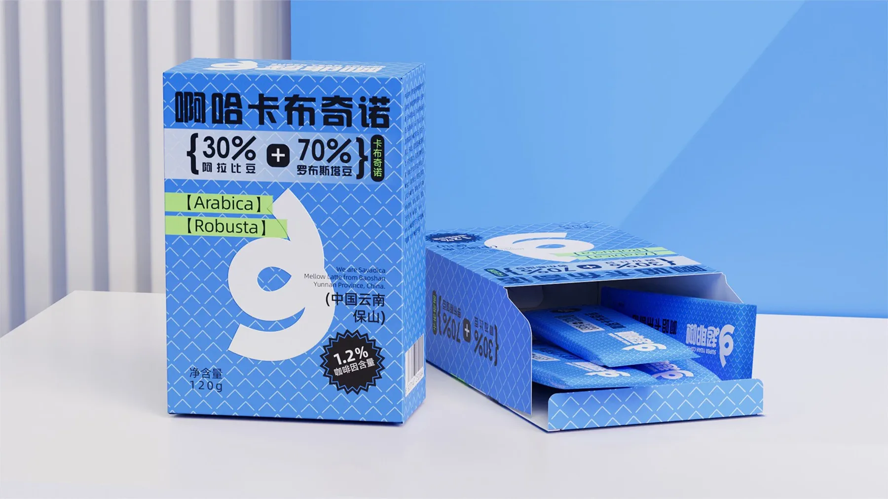
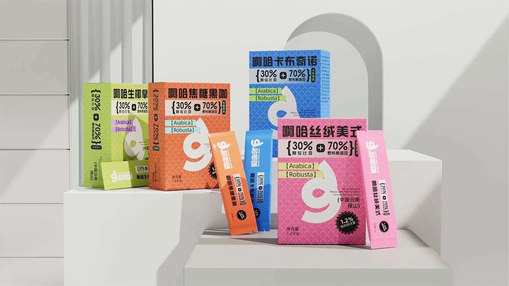
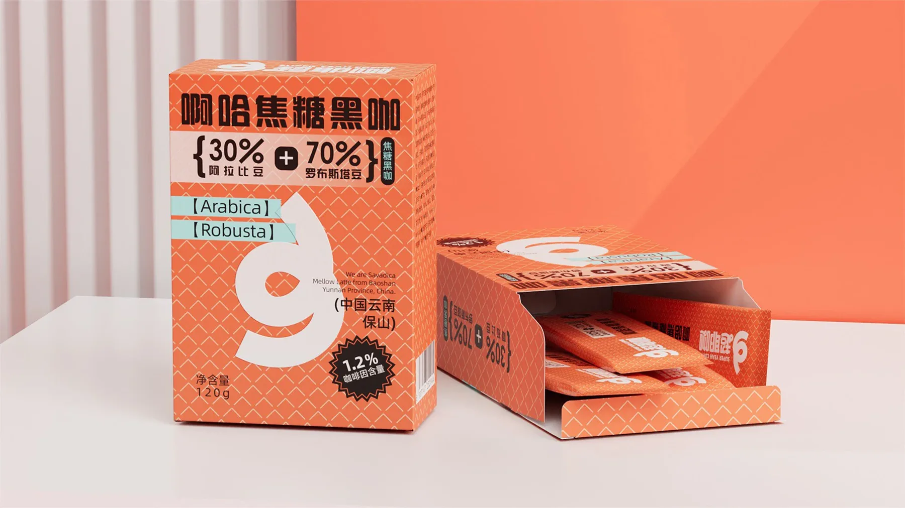
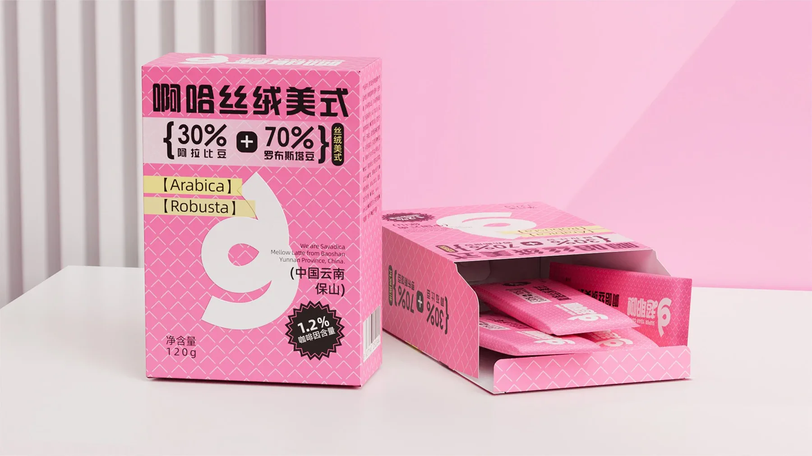

咖啡包装口味系列与货架识别
咖啡条装与外盒需要在很短时间里让用户看懂口味、比例、规格和系列差异。 这里用高饱和色块、粗体标题和统一图形建立一套可延展的包装系统。
- 品类 / Category
- 咖啡冲调产品
- 设计重点 / Focus
- 包装正面信息 / 系列化
- 应用场景 / Scene
- 盒装 / 条装 / 货架陈列
- 视觉策略 / Strategy
- 强标题 / 高识别色 / 规格清晰
从单品到系列陈列
先展示单一口味的包装正面和开盒结构，再用多色组合说明同一套图形规则如何延展到完整系列。



